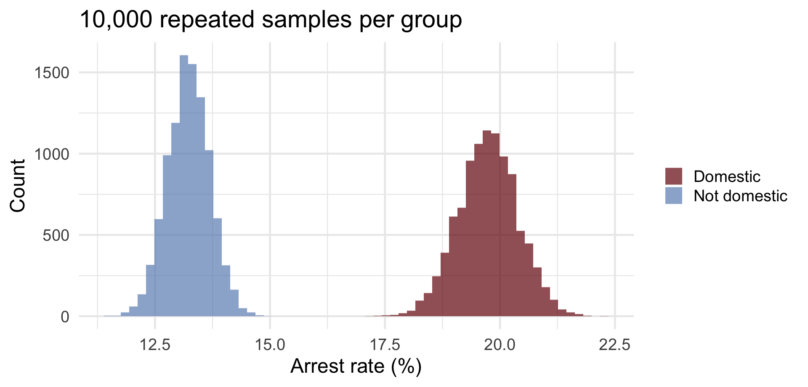
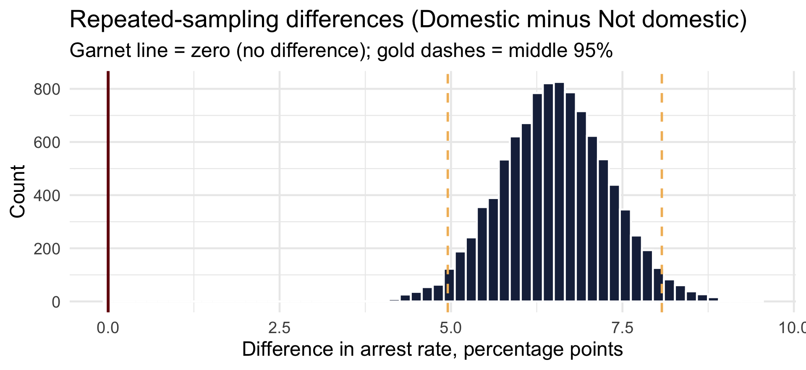
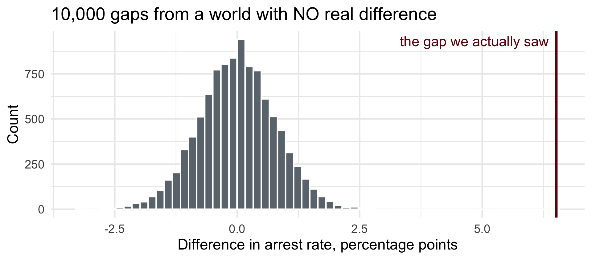

# A tibble: 4 × 3
domestic arrest n
<lgl> <lgl> <int>
1 FALSE FALSE 4685
2 FALSE TRUE 714
3 TRUE FALSE 3009
4 TRUE TRUE 740Hypothesis Testing: Frequentist and Bayesian
CRJU 705 · Session 6 · Fall 2026
Scott M. Mourtgos
This Week
Topic: hypothesis testing — twice. One question, both great traditions.
- The Null Hypothesis Significance Test: its logic, and its fine print
- p-values: what they are — and what they are not
- Bayes’ theorem — back from Session 3, now pointed at hypotheses instead of diagnoses
- The Bayesian answer: a posterior and a credible interval, from one line of R
Learning goals: run prop.test() and bayes_prop_test() on the same question; state correctly what each output lets you claim.
How Today Works
The lecture — concepts
Stanton Ch. 5 → hypothesis testing, both ways: the p-value and the posterior
The in-class exercise — code
Lab 6: you run both tests yourself, step by step
Everything I run today is written up in the demo walkthrough, so nothing on screen is something you have to capture in real time.
Where We’ve Been
- Session 3: Bayes’ theorem — beliefs update by evidence; ignore the base rate and “90% accurate” becomes a 15% answer
- Session 4: sampling distributions — sample statistics fluctuate in predictable ways
- Session 5: confidence intervals — an honest range around an estimate, and one sentence we were not allowed to say about it
- Today: the formal machinery for “is there a difference?” — then a second tradition answering the question you meant to ask
Act I · Testing, the Frequentist Way
Tonight’s Question
Among violent crimes in our Chicago sample: are the domestic ones more likely to end in an arrest?
Reading the Table
| Arrests | Out of | Arrest rate | |
|---|---|---|---|
| Domestic | 740 | 740 + 3,009 = 3,749 | 19.7% |
| Not domestic | 714 | 714 + 4,685 = 5,399 | 13.2% |
A gap of about 6.5 percentage points. All night the difference reads one way: Domestic minus Not domestic.
But this is a sample of Chicago’s 2025 incidents. Session 4 taught us that sample numbers bounce around. Could a gap like this be nothing but bounce?
Let’s Pretend We Sampled Repeatedly
Session 4’s move, applied to both groups at once: draw 10,000 repeated samples of each group and compute the arrest rate every time.

The two piles do not even touch.
The Difference and Its 95% Interval
Subtract, pair by pair, and the difference gets its own pile:

The middle 95% runs from about 5 to 8.1 points. Zero is nowhere near it.
What If There Were No Real Difference?
Build the boring world on purpose: give both groups the same arrest rate (the overall 15.9%), and run the same machinery.

Chance alone makes gaps of a point or two. It made a gap as big as ours in 0 of 10,000 tries. That count is the whole idea of a p-value.
The Null Hypothesis Significance Test
- State the null, \(H_0\): the two arrest rates are the same (difference = 0). The boring world.
- State the alternative, \(H_1\): some difference. Note how little we commit to.
- Compute a test statistic: the observed gap, measured against how much gaps bounce by chance.
- Ask: how often would a gap this large appear by luck in the boring world? The p-value.
- Verdict: \(p < \alpha\) (usually .05) → “reject \(H_0\).” Otherwise → “fail to reject.”
- Note: the machine only weighs evidence against the null — \(H_1\) never gets scored.
Watch the p-Value Do Its Job
As the true difference grows, the overlap shrinks and p falls. Black = null · green = one alternative · orange = overlap · blue dashes = the α = .05 cutoffs.
What a p-Value Is — and Is Not
It is: the probability of data this extreme or more, if the null is true and the model is right.
It is not:
the probability the null hypothesis is true— that’s \(P(H_0 \mid \text{data})\), which frequentism never computesthe probability the result “is due to chance”— same confusion, folksier outfit1 − the probability the alternative is truea measure of how big or important the effect is— with enough data, microscopic effects earn microscopic p-values (hold that thought)
prop.test() on the Real Question
Lab 5’s function, now with two groups: how many, out of how many, for each. Domestic first.
2-sample test for equality of proportions with continuity correction
data: c(740, 714) out of c(3749, 5399)
X-squared = 69.744, df = 1, p-value < 2.2e-16
alternative hypothesis: two.sided
95 percent confidence interval:
0.04929331 0.08098520
sample estimates:
prop 1 prop 2
0.1973860 0.1322467 Reading the Verdict
prop 1andprop 2at the bottom: 19.7% and 13.2%. Domestic is first because we typed it first95 percent confidence interval: about 4.9 to 8.1 points, Domestic minus Not domestic. Last week’s skillp-value < 2.2e-16: R’s way of writing a decimal point followed by fifteen zeros. In the boring world, a gap like ours essentially never happens
\(p < .05\) — “statistically significant.” Reject the null.
The Same Line Lives in t.test()
Last week’s homework, comparing two means. The p-value sat right above the interval the whole time:
Welch Two Sample t-test
data: injuries by intox
t = 12.489, df = 1732.6, p-value < 2.2e-16
alternative hypothesis: true difference in means between group Intoxicated and group Sober is not equal to 0
95 percent confidence interval:
0.3259893 0.4474533
sample estimates:
mean in group Intoxicated mean in group Sober
1.1300971 0.7433758 Same reading: if both kinds of crash truly injured the same number of people, a gap this big would essentially never appear.
The Fine Print: Some Strong Assumptions
Assumption 1 · The Null Stands Alone

We computed how surprising the data are under the null — and never once said what the alternative world looks like.
…But the Alternative Could Be Anywhere

“Reject the null” tells you where you aren’t. It never tells you where you are.
Assumption 2 · The Shape Itself

The p-value came from this specific curve — which assumes large-enough samples, independent observations, and a model that fits the data.
…And Many Shapes Fit the Same Data

How often do researchers test those assumptions before trusting the p-value? Less often than you’d hope.
Act II · Bayes, Recapped
Bayes’ Theorem — Recap from Session 3
\[ P(H \mid \text{data}) = P(\text{data} \mid H) \times P(H) \,/\, P(\text{data}) \qquad \small{\text{posterior} = \text{likelihood} \times \text{prior} / \text{evidence}} \]
- Session 3’s move: conditioning is shrink the world, re-proportion — Bayes’ theorem reverses the direction. Ianfluenza: prior 1% + “90% accurate” → posterior ≈ 15%
- New today: look where the p-value lives — entirely in the likelihood, \(P(\text{data} \mid H_0)\). It never becomes \(P(H_0 \mid \text{data})\)
- Bayesian testing finishes the flip — \(P(H \mid \text{data})\), the question your chief, judge, or city council actually asked — at the price of a stated prior
The Two Traditions, Side by Side
| Frequentist | Bayesian | |
|---|---|---|
| Asks | How surprising are these data if \(H_0\) is true? | How probable is each hypothesis, given the data? |
| Probability attaches to | Data, over imagined repeated samples | Hypotheses and parameters directly |
| Prior knowledge | None used | Explicit, stated up front |
| Output | p-value, confidence interval | Posterior distribution, credible interval |
| “95%” means | The procedure captures the truth in 95% of replications | 95% probability the parameter lies in this interval |
Act III · The Recidivism Trial, Both Ways
The Setup
- Context: typical recidivism runs about 60% — that’s what we believed going in
- Design: randomized trial of a reentry program — 100 treated, 100 control
- Outcomes: treatment 40/100 reoffend · control 50/100 reoffend
- Question: did the program reduce recidivism?
Ten percentage points, exactly the kind of effect a city would fund. Both traditions, go.
The Frequentist Answer
Treatment first, so the difference reads Treatment minus Control:
2-sample test for equality of proportions with continuity correction
data: c(40, 50) out of c(100, 100)
X-squared = 1.6364, df = 1, p-value = 0.2008
alternative hypothesis: two.sided
95 percent confidence interval:
-0.24719748 0.04719748
sample estimates:
prop 1 prop 2
0.4 0.5 The Frequentist Answer, Read Aloud
- \(p = 0.20\) — not statistically significant
- The interval, about -25 to +5 points, has zero inside it
- Honest reading: a 10-point gap like this could plausibly occur even if the program did nothing
- The grant report writes itself — “no significant effect” — and the program probably dies there
What We Knew Before the Trial
A Bayesian has to say, out loud, what they believed before seeing the data. That is the prior.
- We said it already: recidivism typically runs about 60%
- How firmly do we believe that? Let’s say: about as firmly as if we had already watched 10 people — 6 reoffended, 4 did not
- In R, that whole belief is two numbers:
prior = c(6, 4) - Then the trial’s 200 real people get added to our 10 imaginary ones. That adding-up is the posterior: what we believe after the data
The Bayesian Answer
Same two numbers per group as prop.test(), plus the prior:
Bayesian test of two proportions
data, group 1: 40 of 100 (40.0%)
data, group 2: 50 of 100 (50.0%)
prior: 6 yes, 4 no (about 60%, worth 10 cases), same for both groups
estimate 95% credible interval
group 1 41.8% 32.8% to 51.1%
group 2 50.9% 41.6% to 60.2%
difference (1 minus 2) -9.1 points -22.0 to 4.0 points
Probability group 1 is higher than group 2: 0.09
Probability group 1 is lower than group 2: 0.91 Reading It
estimate: our best single guess for each group’s true rate, after the data95% credible intervalfor the difference: about -22 to +4 points, Treatment minus ControlProbability group 1 is lower than group 2: 0.91 — given the prior and the data, about a 91% probability the program reduces recidivism
And the sentence Session 5 forbade is now legal: “There is a 95% probability the true difference lies between -22 and +4 points.” That is exactly what a credible interval means.
The Posteriors, Seen

Same Data, Different Questions
| Frequentist | Bayesian | |
|---|---|---|
| Verdict | \(p = 0.20\): cannot reject “no effect” | Probability the program works ≈ 0.91 |
| Plain English | “This gap could plausibly be luck” | “About 9-to-1 odds the program works” |
- Both statements are true of the same data. Neither is a trick
- A policymaker deciding whether to fund the program next year: which sentence actually helps?
- Your homework asks you to sit with exactly this discomfort
Does the Prior Matter Here?
Leave prior = out and the function starts from “I know nothing”:
- Probability the program works: 0.92 instead of 0.91. It barely moved
- Why? 200 real people outweigh 10 imaginary ones. Data overwhelm a modest prior
- A prior matters most when data are scarce — which is exactly when you most need to say it out loud
Act IV · Back to Chicago, Both Ways
The Bayesian Answer to Tonight’s Question
We have no strong belief going in, so no prior =:
Bayesian test of two proportions
data, group 1: 740 of 3,749 (19.7%)
data, group 2: 714 of 5,399 (13.2%)
prior: know-nothing (1 yes, 1 no), same for both groups
estimate 95% credible interval
group 1 19.8% 18.5% to 21.0%
group 2 13.2% 12.3% to 14.2%
difference (1 minus 2) 6.5 points 5.0 to 8.1 points
Probability group 1 is higher than group 2: more than 0.99
Probability group 1 is lower than group 2: less than 0.01 Big Sample, Small Sample
| Chicago arrests (9,148 cases) | Reentry trial (200 people) | |
|---|---|---|
prop.test() |
95% CI: 4.9 to 8.1 points · \(p < .001\) | 95% CI: -25 to +5 points · \(p = 0.20\) |
bayes_prop_test() |
95% credible: 5 to 8.1 points | 95% credible: -22 to +4 points · P(works) ≈ 0.91 |
- With thousands of cases the two traditions hand you nearly the same range. The data drown out everything else
- With 100 per group, both ranges still include zero — but one tradition stops at “not significant,” and the other tells you how probable the effect is
- Neither is wrong. They answer different questions
Act V · Sample Size Changes Everything
The p-Value and Sample Size
Fix a trivial true effect (Δ = 0.1) and just keep collecting data:

The effect never grows — only n does — and p still dives below .05. Given enough data, everything is “significant.”
Bayes and Sample Size
Same trivial effect, Bayesian glasses — watch the posterior for the difference as n grows:

More data doesn’t flip a verdict — it sharpens the estimate, which visibly converges on “about 0.1, i.e., almost nothing.” The tininess stays in view.
So Always Ask: How Big?
- “Significant” only means detectable. With enough cases, a gap of a single percentage point would earn a tiny p-value too
- So after either test, say the size in real units: arrest rates about 6.5 points apart (19.7% vs 13.2%)
- Then ask the question no test can answer for you: is a gap that size big enough to matter?
What We Learned Today
- NHST: standardized and everywhere — but it only asks how surprising are the data under the null?, never scores the alternative, and rewards sheer n
- p-values are not the probability any hypothesis is true, and are silent about size
- Bayes answers \(P(H \mid \text{data})\) at the price of a stated prior — tonight, in one line of R
- The same trial gave \(p = 0.20\) and a 91% probability the program works. Both true; different questions
- Whatever tradition you use: say how big the difference is, in units a human cares about
Today’s Lab & Homework
- Lab 6: one question about the correctional officers, answered twice. You run both tests, step by step, and submit your script (lab page)
- Homework 6: Bayesian vs. frequentist reasoning, plus both tests on the Alaska crash data, and four R4DS exercises from Ch. 17, Dates and times (posted on the Session 6 page)
- Next session — the applied data workshop: the full messy-data pipeline, start to finish. Your final-project dataset selection is due at Session 7 — come with a candidate dataset and be ready to defend it
Appendix · How Bayes Became Computable (optional)
The Ugly Denominator
Not on any exam — this is the machinery behind the Bayesian models we start fitting in Session 8, for the curious.
\[ P(H \mid \text{data}) = \frac{P(\text{data} \mid H)\,P(H)}{\color{#73000A}{P(\text{data})}} \]
That innocent-looking denominator is the probability of the data under every possible hypothesis, weighted by its prior:
\[ \color{#73000A}{P(\text{data}) = \int P(\text{data} \mid \theta)\, P(\theta)\, d\theta} \]
For realistic models this integral is intractable — for most of the 20th century, Bayes was philosophically beautiful and practically unusable.
Enter MCMC
How Markov chain Monte Carlo “measures the curve” without solving the integral:
- We don’t know the whole posterior curve — but we do know its formula up to a constant (likelihood × prior)
- A sampler evaluates that formula at its current spot and at a proposed spot
- Compare the two values: if the new spot is higher → accept; if lower → accept with that probability
- The impossible constant appears in both numerator and denominator — it cancels in the ratio. We never need to know it
MCMC, Watched Live
A Metropolis sampler exploring a distribution (left) while its samples pile up into that very shape (right):

We End Up With the Probability Distribution
- The pile of accepted samples is the posterior — to any precision you like, just run longer
- Think back to Session 4: we approximated sampling distributions by drawing samples and stacking them. MCMC plays exactly the same trick on the posterior
- This is why modern Bayes is possible at all — and it is what
brmswill do for us starting in Session 8. (Tonight’sbayes_prop_test()did not need it: for a simple proportion, the posterior has an exact formula.)
CRJU 705 · Session 6